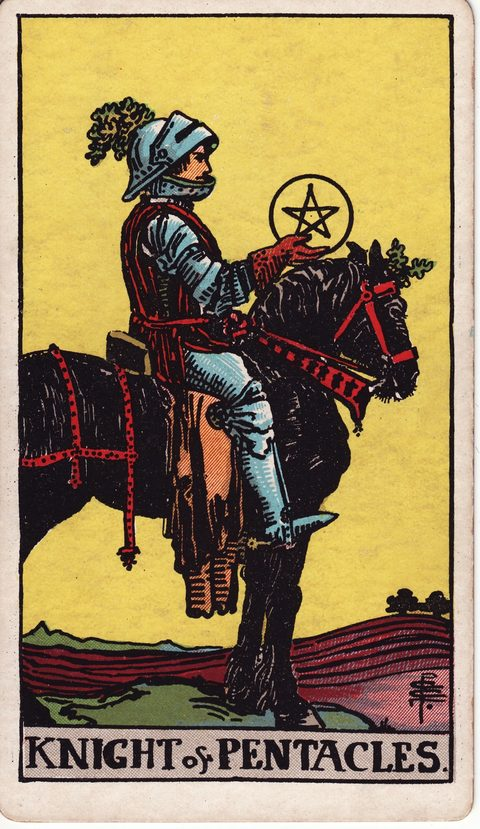
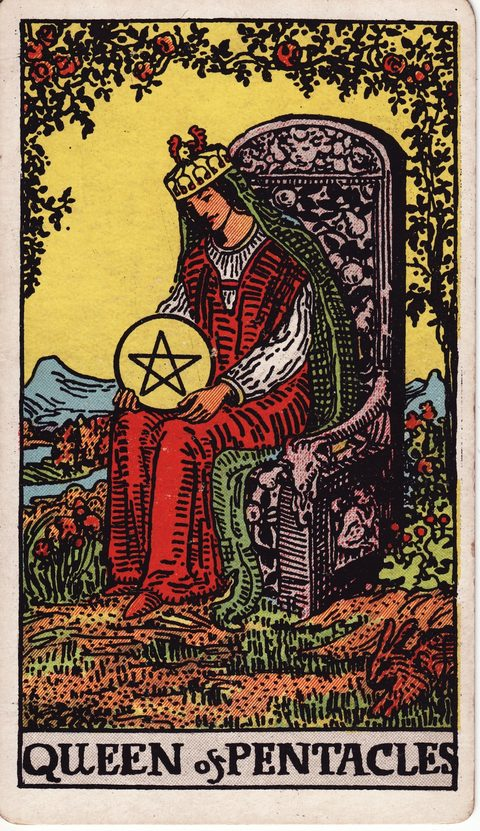

ペンタクルの意味一覧（14枚）
ペンタクル（金貨）は地のエレメントに対応し、お金・仕事・技術・健康・暮らしの土台を司るスートです。エースからテンまでの数札は、小さな機会をつかみ、工夫と努力を重ね、蓄えと成果を得て、次の世代へ受け継ぐまでの着実な流れを描きます。人物札は、現実的な力をどう育て、どう使う人なのかを表します。決断の場面でペンタクルが出たときは、「時間とお金の見通しは立っているか」「長く続けられる形になっているか」を確かめる視点として読むと役立ちます。転職や引っ越し、買い物など、生活に直結する選択で特に参考になるスートです。数が小さいほど種まきの段階を、大きいほど実りや継承の段階を表す傾向があります。焦らず積み上げることの価値を思い出させてくれるカードが多いのも特徴です。






ペンタクルの視点を、いまの選択肢に当てはめてみる
今抱えている迷いを、このカードの視点から考えてみるペンタクルのキーワード早見表
- ペンタクルのエース：正位置「チャンス・実りの種・着実な始まり」／逆位置「機会の逸失・浪費・不安定」
- ペンタクルの2：正位置「柔軟な両立・やりくり」／逆位置「過負荷・優先順位の混乱」
- ペンタクルの3：正位置「協働・専門性・評価」／逆位置「連携不足・手抜き・評価されない」
- ペンタクルの4：正位置「保持・安定・守り」／逆位置「手放し・浪費・執着の緩み」
- ペンタクルの5：正位置「困窮・孤立・不安」／逆位置「回復・援助・状況の好転」
- ペンタクルの6：正位置「分かち合い・公平・恩恵」／逆位置「不公平・見返りへの期待」
- ペンタクルの7：正位置「見極め・成長を待つ・中間評価」／逆位置「徒労感・成果が出ない・焦り」
- ペンタクルの8：正位置「修練・集中・地道な努力」／逆位置「惰性・手抜き・完璧主義」
- ペンタクルの9：正位置「自立・豊かさ・洗練」／逆位置「依存・見栄・孤独な豊かさ」
- ペンタクルの10：正位置「継承・安定・長期的な豊かさ」／逆位置「不安定・継承の争い・家の問題」
- ペンタクルのペイジ：正位置「学び・堅実・着実な一歩」／逆位置「怠惰・先延ばし・現実味の欠如」
- ペンタクルのナイト：正位置「堅実・忍耐・責任感」／逆位置「停滞・頑固・退屈」
- ペンタクルのクイーン：正位置「豊かさ・育む・実用的な優しさ」／逆位置「過保護・物質主義・自分を後回し」
- ペンタクルのキング：正位置「富・安定・信頼」／逆位置「頑固・貪欲・物質偏重」